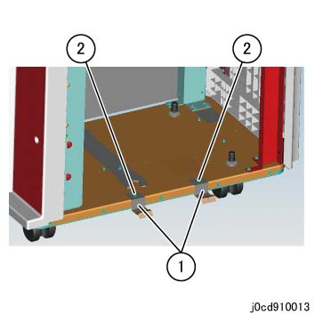
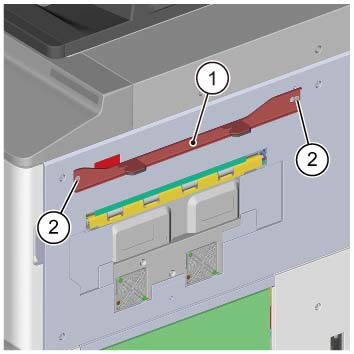
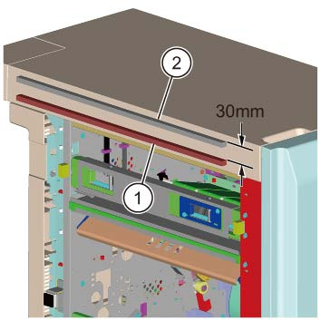
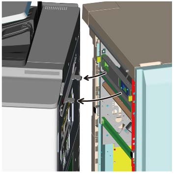
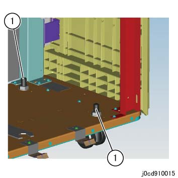
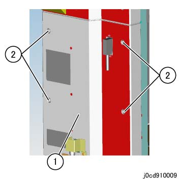
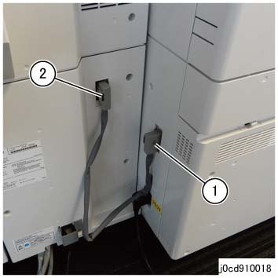

9.1.3 ...的安装 CDM770 [Revoria 按下 E1136G] 

(图 1) ffw910008
产品代码
CDM770 : QD200138
电源线（3脚）: EM100188 (FB), FBAP (请参阅 6.2.1.1)
安装步骤
关闭IOT主机和打印服务器, 拔掉电源.

用于 如何 to 关闭电源, 请参阅 the 维修 手册 用于 IOT 和 打印服务器.
打开 the package 该 comes 使用 CDM 和 检查 bundled/separate order items.
CDM - 随附物品 (图 2)
编号
名称
数量
1
Earth 板
2
2
电源线 Protector 支架
1
3
对接 板
1
4
螺钉(M3x7)
4
5
螺钉 (用于 ...的安装 对接 板 (M4x16))
2
6
电源线 (选件)
1
7
I/F 电缆 (短路: 640 mm) (选件)
1
8
卡纸 措施 Label (不 use)
1
那里 是 编号 示意图 notations 用于 编号 8.

(图 2) rm910013
Peel 关闭/脱离 the securing tapes 从 the CDM.
打开 the 前面 门 和 拆卸 securing ribbon 和 tape of 滑槽. (图 3)
Ribbon (前面/后面)
Tape

(图 3) cd910005
拆卸后下盖板 of CDM. (图 4)
拆卸螺钉（x4）.
拆卸后下盖板.

(图 4) cd910001
安装 Earth Plates 到 CDM. (图 5)
安装 Earth 板 (x2) 在...上 左侧.
固定 it by using 螺钉 (M3x7) provided in the bundle.

(图 5) cd910013
安装 对接 板 to IOT. (图 6)
安装 对接 板.
固定 the 对接 板 by using 螺钉 (M4x16: x2).

(图 6) cd910020
对齐 sponge (短路) bundled 使用 IOT 使用 mark 和 安装 it to IOT. (图 7)
Affix the Sponge.

(图 7) cd910021
安装 sponge (长) included in IOT 到 CDM at a 位置 关于 30 mm 以下 the existing sponge, 和 discard the 上方 sponge. (图 8)
Affix the Sponge (长).
Peel 关闭/脱离 the sponge 和 discard.

(图 8) cd910022
Temporarily 拆卸螺钉 哪个 secures the Latch Stopper 的 CDM. (图 9)
(图 9) cd910005
对齐 hooks of IOT 对接 板 到 对接 slots 的 CDM 和 push it in 直到 they 锁定. (图 10)
同时, visually 确认 the gasket 的 Earth 板 seals properly 和/与 编号 gap.
If 那里 is 任何 gap in the Earth 板 和 it 不 seal properly, or 如果 hooks of IOT 对接 板 请勿 match the 高度 的 对接 slots 的 CDM, 执行 步骤 11 to 调整 高度 的 CDM Caster.

(图 10) cd910023
Use the provided wrench to 调整 高度 的 CDM Caster as 所需的.
拆卸螺钉 (x1) 从 the CDM to extract the wrench. (图 11)

(图 11) cd910014
前面 Caster. (图 12)

(图 12) cd910015
后面 Caster. (图 13)

(图 13) cd910007
Use the wrench to 松开 the Securing 螺母. (图 15, 图 16)
Use the wrench to 转动 [前面 (上游)]: Adjusting 螺栓 (图 15), [前面 (Downstream) 和 后面 (x2)]: Adjusting Hexagonal 螺栓 (图 16) 和 调整 高度.
转动 hexagonal 螺栓 using the provided wrench.

(图 14) ifm910011
如果 is difficult to work 使用 provided wrench, use the ratchet wrench.
Use the wrench to 拧紧 the Securing 螺母. (图 15, 图 16)

(图 15) ia90011

(图 16) ip910018
固定 the Latch Stopper by using 螺钉. (图 17)
(图 17) cd910005
连接 CDM 到 subsequent 设备 (例如. 当...时 connecting to HCS) using the I/F 电缆 (短路). (图 17)
连接 lattice 连接器 to 连接器 1 (P306).
连接 lattice 连接器 到 HCS.

(图 18) sa910002
安装 后面 下方 盖板 的 CDM. (图 19)
安装 后面 下方 盖板.
固定 the 后面 下方 盖板 by using 螺钉（x4）.

(图 19) jcd910009
连接电源线 到 CDM. (图 20)
插头 电源线 进入 the 入口 的 CDM.
安装 电源线 Protector 支架 by using 螺钉 (M3x7) 从 the bundle.

(图 20) cd910008
连接 CDM to IOT by using the I/F 电缆 (短路). (图 21)
连接 lattice 连接器 to IOT.
连接 lattice 连接器 to 连接器 (P305).

(图 21) cd910018
开机 IOT 和 go to 步骤 19 (用于 新 installations).
开机 IOT, 和 do 以下 (当...时 changing the CDM 设备 用于 Interposer-installed configurations).
当...时 changing the CDM 设备 用于 Interposer-installed configurations, the Interposer 纸盘 尺寸 传感器 analog 调整 值 应 loaded 到 CDM/装订器 D6 和/与 以下步骤.
输入 the CE 模式, change the 值 of NVM 769-546 从 0 to 1.
出纸 CE 模式 和 转动 关机 然后 ON.
检查 操作 的 CDM.
检查 状态 of 纸张 传输, 用于 异常 噪音, 和 等.
确认 纸张 不 get 卡住的, torn, contaminated, folded, or creased.